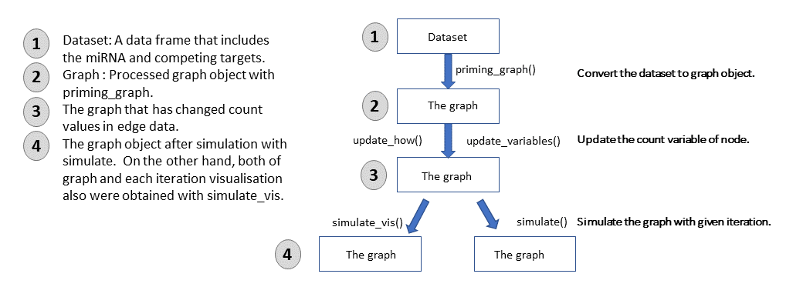

This vignette demonstrates how to analyse miRNA:Competing interactions via ceRNAnetsim package. The perturbations in the miRNA:target interactions are handled step by step in ceRNAnetsim. The package calculates and simulates regulation of miRNA:competing RNA interactions based on amounts of miRNA and the targets and interaction factors.
The ceRNAnetsim works by executing following steps:
priming_graph() function so that it’s converted into a graph. This function makes calculations that are depended on miRNA amount, target (competing) amount and the interaction factors. It determines the efficiency of miRNA to each target and saves that values as edge data. All calculations are performed in edge data. After that, results of calculations are used in node data.update_variables() or update_how() functions.update_nodes().simulate() or simulate_vis().The workflow of ceRNAnetsim are shown as following:

Firstly the package is loaded:
#install.packages("devtools")
#devtools::install_github("selcenari/ceRNAnetsim")
library(ceRNAnetsim)Below is the minimal data that can be used with ceRNAnetsim.
#> competing miRNA Competing_expression miRNA_expression
#> 1 Gene1 Mir1 10000 1000
#> 2 Gene2 Mir1 10000 1000
#> 3 Gene3 Mir1 5000 1000
#> 4 Gene4 Mir1 10000 1000
#> 5 Gene4 Mir2 10000 2000
#> 6 Gene5 Mir2 5000 2000
#> 7 Gene6 Mir2 10000 2000The table is actually constructed by merging three different tables:
So, the basic_data table is constructed by merging following tables:
gene_expression
#> competing Competing_expression
#> 1 Gene1 10000
#> 2 Gene2 10000
#> 3 Gene3 5000
#> 4 Gene4 10000
#> 5 Gene5 5000
#> 6 Gene6 10000Third table should contain miRNA:gene interactions per row. The ceRNAnetsim will assume first column contains competing RNA names and second column to be miRNA names. If the order is different the user should indicate column names accordingly.
interaction_simple
#> competing miRNA
#> 1 Gene1 Mir1
#> 2 Gene2 Mir1
#> 3 Gene3 Mir1
#> 4 Gene4 Mir1
#> 5 Gene4 Mir2
#> 6 Gene5 Mir2
#> 7 Gene6 Mir2The three tables can be joined in R (as shown below) or elsewhere to have interaction and expression data altogether in expected format.
interaction_simple %>%
inner_join(gene_expression, by = "competing") %>%
inner_join(mirna_expression, "miRNA") -> basic_data
basic_data
#> competing miRNA Competing_expression miRNA_expression
#> 1 Gene1 Mir1 10000 1000
#> 2 Gene2 Mir1 10000 1000
#> 3 Gene3 Mir1 5000 1000
#> 4 Gene4 Mir1 10000 1000
#> 5 Gene4 Mir2 10000 2000
#> 6 Gene5 Mir2 5000 2000
#> 7 Gene6 Mir2 10000 2000ceRNAnetsim processes your dataset as graph object and simulates competing behaviours of targets when steady-state is perturbed via expression level changes in one or more genes. Let’s go over three steps:
In first step, the expression and interaction table is converted into graph/network. tidygraph is used importing the data thus both node and edge data are accessible as tables if needed. priming_graph generates many columns in edge/node table which are mostly for internal use.
#Convertion of dataset to graph.
priming_graph(basic_data, competing_count = Competing_expression, miRNA_count =miRNA_expression)
#> Warning in priming_graph(basic_data, competing_count = Competing_expression, : First column is processed as competing and the second as miRNA.
#> # A tbl_graph: 8 nodes and 7 edges
#> #
#> # A rooted tree
#> #
#> # Node Data: 8 x 7 (active)
#> name type node_id initial_count count_pre count_current
#> <chr> <chr> <int> <dbl> <dbl> <dbl>
#> 1 Gene1 Comp~ 1 10000 10000 10000
#> 2 Gene2 Comp~ 2 10000 10000 10000
#> 3 Gene3 Comp~ 3 5000 5000 5000
#> 4 Gene4 Comp~ 4 10000 10000 10000
#> 5 Gene5 Comp~ 5 5000 5000 5000
#> 6 Gene6 Comp~ 6 10000 10000 10000
#> # ... with 2 more rows, and 1 more variable: changes_variable <chr>
#> #
#> # Edge Data: 7 x 19
#> from to Competing_name miRNA_name Competing_expre~ miRNA_expression
#> <int> <int> <chr> <chr> <dbl> <dbl>
#> 1 1 7 Gene1 Mir1 10000 1000
#> 2 2 7 Gene2 Mir1 10000 1000
#> 3 3 7 Gene3 Mir1 5000 1000
#> # ... with 4 more rows, and 13 more variables: dummy <dbl>,
#> # afff_factor <dbl>, degg_factor <dbl>, comp_count_list <list>,
#> # comp_count_pre <dbl>, comp_count_current <dbl>,
#> # mirna_count_list <list>, mirna_count_pre <dbl>,
#> # mirna_count_current <dbl>, mirna_count_per_dep <dbl>,
#> # effect_current <dbl>, effect_pre <dbl>, effect_list <list>update_how function can be used to simulate a change in the network. (If multiple chnages are aimed to be used as trigger, update_variables() function should be used).
In the example below, expression level of “Gene2” is increased to two-fold.
priming_graph(basic_data, competing_count = Competing_expression,
miRNA_count =miRNA_expression) %>%
update_how(node_name = "Gene2", how=2)
#> Warning in priming_graph(basic_data, competing_count = Competing_expression, : First column is processed as competing and the second as miRNA.
#> # A tbl_graph: 8 nodes and 7 edges
#> #
#> # A rooted tree
#> #
#> # Node Data: 8 x 7 (active)
#> name type node_id initial_count count_pre count_current
#> <chr> <chr> <int> <dbl> <dbl> <dbl>
#> 1 Gene1 Comp~ 1 10000 10000 10000
#> 2 Gene2 Comp~ 2 10000 10000 20000
#> 3 Gene3 Comp~ 3 5000 5000 5000
#> 4 Gene4 Comp~ 4 10000 10000 10000
#> 5 Gene5 Comp~ 5 5000 5000 5000
#> 6 Gene6 Comp~ 6 10000 10000 10000
#> # ... with 2 more rows, and 1 more variable: changes_variable <chr>
#> #
#> # Edge Data: 7 x 19
#> from to Competing_name miRNA_name Competing_expre~ miRNA_expression
#> <int> <int> <chr> <chr> <dbl> <dbl>
#> 1 1 7 Gene1 Mir1 10000 1000
#> 2 2 7 Gene2 Mir1 10000 1000
#> 3 3 7 Gene3 Mir1 5000 1000
#> # ... with 4 more rows, and 13 more variables: dummy <dbl>,
#> # afff_factor <dbl>, degg_factor <dbl>, comp_count_list <list>,
#> # comp_count_pre <dbl>, comp_count_current <dbl>,
#> # mirna_count_list <list>, mirna_count_pre <dbl>,
#> # mirna_count_current <dbl>, mirna_count_per_dep <dbl>,
#> # effect_current <dbl>, effect_pre <dbl>, effect_list <list>You can see the current count of Gene2 node is 20000 and its change is denoted as “Up” in changes_variable column in node table data.
Finally, with the help of simulate function, the effect of expression change (i.e. the trigger) on overall network. The example code advances only for 5 cycles.
priming_graph(basic_data, competing_count = Competing_expression,
miRNA_count =miRNA_expression) %>%
update_how(node_name = "Gene2", how=2) %>%
simulate(cycle = 5)
#> Warning in priming_graph(basic_data, competing_count = Competing_expression, : First column is processed as competing and the second as miRNA.
#> # A tbl_graph: 8 nodes and 7 edges
#> #
#> # A rooted tree
#> #
#> # Node Data: 8 x 7 (active)
#> name type node_id initial_count count_pre count_current
#> <chr> <chr> <int> <dbl> <dbl> <dbl>
#> 1 Gene1 Comp~ 1 10000 10062. 10062.
#> 2 Gene2 Comp~ 2 10000 19845. 19845.
#> 3 Gene3 Comp~ 3 5000 5031. 5031.
#> 4 Gene4 Comp~ 4 10000 10059. 10059.
#> 5 Gene5 Comp~ 5 5000 5001. 5001.
#> 6 Gene6 Comp~ 6 10000 10002. 10002.
#> # ... with 2 more rows, and 1 more variable: changes_variable <chr>
#> #
#> # Edge Data: 7 x 20
#> from to Competing_name miRNA_name Competing_expre~ miRNA_expression
#> <int> <int> <chr> <chr> <dbl> <dbl>
#> 1 1 7 Gene1 Mir1 10000 1000
#> 2 2 7 Gene2 Mir1 10000 1000
#> 3 3 7 Gene3 Mir1 5000 1000
#> # ... with 4 more rows, and 14 more variables: dummy <dbl>,
#> # afff_factor <dbl>, degg_factor <dbl>, comp_count_list <list>,
#> # comp_count_pre <dbl>, comp_count_current <dbl>,
#> # mirna_count_list <list>, mirna_count_pre <dbl>,
#> # mirna_count_current <dbl>, mirna_count_per_dep <dbl>,
#> # effect_current <dbl>, effect_pre <dbl>, effect_list <list>,
#> # mirna_count_per_comp <dbl>count_current column indicate results after 5 cycle of calculations for each node. You can see the gene expression changes after this perturbation and simulation. This table can be obtained easily at following:
priming_graph(basic_data, competing_count = Competing_expression,
miRNA_count =miRNA_expression) %>%
update_how(node_name = "Gene2", how=2) %>%
simulate(cycle = 5)%>%
as_tibble()%>%
select(name, initial_count, count_current)
#> Warning in priming_graph(basic_data, competing_count = Competing_expression, : First column is processed as competing and the second as miRNA.
#> # A tibble: 8 x 3
#> name initial_count count_current
#> <chr> <dbl> <dbl>
#> 1 Gene1 10000 10062.
#> 2 Gene2 10000 19845.
#> 3 Gene3 5000 5031.
#> 4 Gene4 10000 10059.
#> 5 Gene5 5000 5001.
#> 6 Gene6 10000 10002.
#> 7 Mir1 1000 1000
#> 8 Mir2 2000 2000ceRNAnetsim also provides the simulation of gene knockdown in the network. In normal conditions, when a gene is up or down regulated, it is considered that amounts of gene transcripts change depended on interactions. But, the transcripts of the gene are not observed in the system when it is knocked down. To achieve this case, you just need to define how argument to 0 (zero) in update_how function.
priming_graph(basic_data, competing_count = Competing_expression,
miRNA_count =miRNA_expression) %>%
update_how(node_name = "Gene2", how=0) %>%
simulate(cycle = 5)
#> Warning in priming_graph(basic_data, competing_count = Competing_expression, : First column is processed as competing and the second as miRNA.
#> # A tbl_graph: 8 nodes and 7 edges
#> #
#> # A rooted tree
#> #
#> # Node Data: 8 x 7 (active)
#> name type node_id initial_count count_pre count_current
#> <chr> <chr> <int> <dbl> <dbl> <dbl>
#> 1 Gene1 Comp~ 1 10000 9886. 9886.
#> 2 Gene2 Comp~ 2 10000 0 0
#> 3 Gene3 Comp~ 3 5000 4943. 4943.
#> 4 Gene4 Comp~ 4 10000 9891. 9891.
#> 5 Gene5 Comp~ 5 5000 4998. 4998.
#> 6 Gene6 Comp~ 6 10000 9997. 9997.
#> # ... with 2 more rows, and 1 more variable: changes_variable <chr>
#> #
#> # Edge Data: 7 x 20
#> from to Competing_name miRNA_name Competing_expre~ miRNA_expression
#> <int> <int> <chr> <chr> <dbl> <dbl>
#> 1 1 7 Gene1 Mir1 10000 1000
#> 2 2 7 Gene2 Mir1 10000 1000
#> 3 3 7 Gene3 Mir1 5000 1000
#> # ... with 4 more rows, and 14 more variables: dummy <dbl>,
#> # afff_factor <dbl>, degg_factor <dbl>, comp_count_list <list>,
#> # comp_count_pre <dbl>, comp_count_current <dbl>,
#> # mirna_count_list <list>, mirna_count_pre <dbl>,
#> # mirna_count_current <dbl>, mirna_count_per_dep <dbl>,
#> # effect_current <dbl>, effect_pre <dbl>, effect_list <list>,
#> # mirna_count_per_comp <dbl>So, if Gene2 is knocked down, there will be more miRNA (Mir1 to be exact) available for Gene1, Gene3 and Gene4, thus lowering their transcript levels. Since Gene4 is has lower expression level, we can observe minute changes in Gene5 and Gene6 levels due to more miRNA (Mir2) being available for them. These changes can be observed in current_count column.
Briefly, ceRNAnetsim utilizes the change(s) as trigger and calculates regulation of targets according to miRNA:target and target:total target ratios.
See the other vignettes for more information.